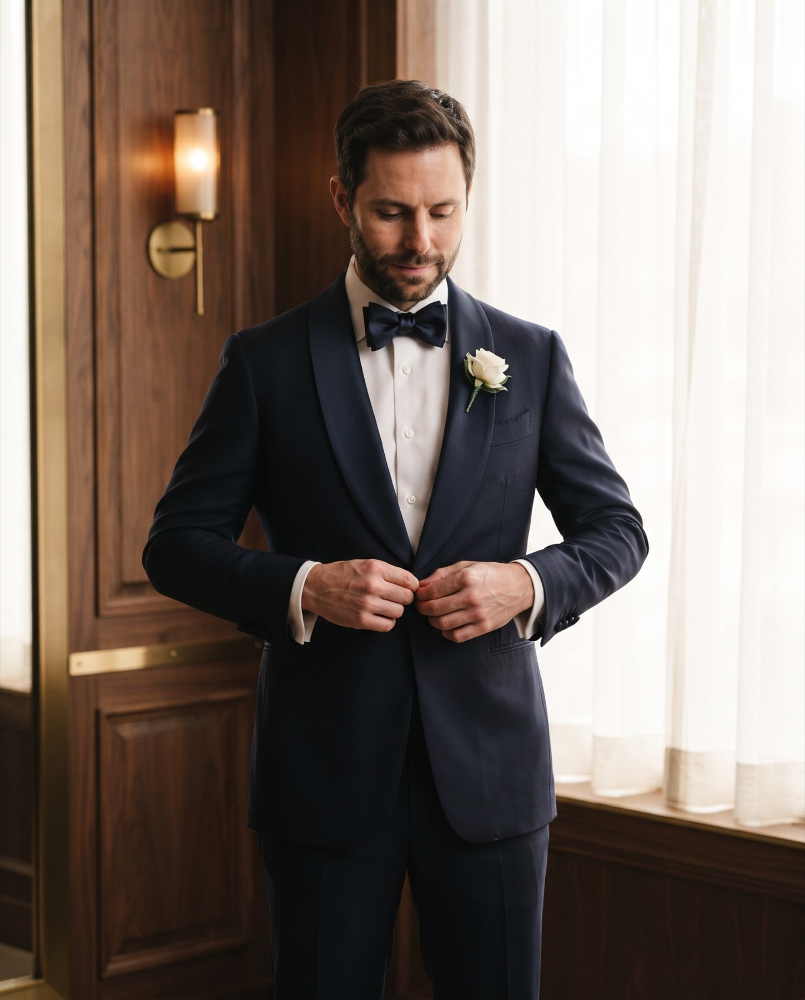

groom.jpg · 16:9 wedding-bowtie.jpg · 1:1
wedding-bowtie.jpg · 1:1 wedding-shirt.jpg · 1:1
wedding-shirt.jpg · 1:1 wedding-cufflinks.jpg · 1:1
wedding-cufflinks.jpg · 1:1 wedding-shoes.jpg · 1:1
wedding-shoes.jpg · 1:1
groom.jpg · 16:9wedding-bowtie.jpg · 1:1wedding-shirt.jpg · 1:1wedding-cufflinks.jpg · 1:1wedding-shoes.jpg · 1:1